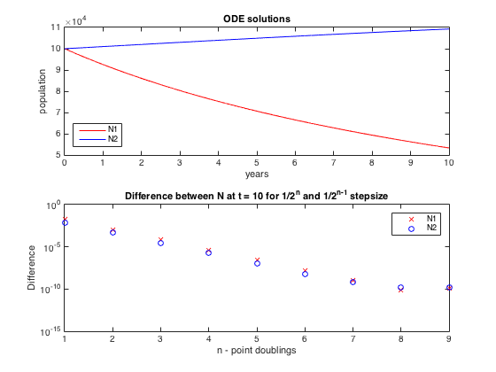

Contents
Matt McFarland
ENGS 91, lab 6, question 1
function [] = q1()
clear all; close all;
Define Functions and Constants
A1 = .1; % birthrates A2 = .1; B1 = 8.0e-7; % deathrates B2 = 8.0e-7; C1 = 1.0e-6; % competition rate C2 = 1.0e-7; N1_0 = 1e5; N2_0 = 1e5; t_0 = 0; % 0 years t_end = 10; % 10 years n_max = 9; % solve for 1 to n_max point doublings % Differential equations dN1 = @(N1, N2) (N1 * (A1 - B1 * N1 - C1 * N2)); dN2 = @(N1, N2) (N2 * (A2 - B2 * N2 - C2 * N1)); % Stepsize function StepSize = @(n) (1 ./ ( 2.^n )); % Runge Kutta ODE next step RK4OFunc = @MyRK4O;
Runge Kutta Fourth Order function defined at end of file
This problem's ODE solver defined at end of file
Solve ODE for different time step sizes
[N1, N2, t] = SolveODE(dN1, dN2, RK4OFunc, StepSize, N1_0, N2_0, t_0, t_end, n_max); convergence = zeros(n_max+1,4); prev_points = (t_end - t_0) / StepSize(0) + 1; for i = 2:n_max+1 points = (t_end - t_0) / StepSize(i-1) + 1; convergence(i,1) = points; convergence(i,2) = abs(N1(i,points) - N1(i-1,prev_points)); convergence(i,3) = points; convergence(i,4) = abs(N2(i,points) - N2(i-1,prev_points)); prev_points = points; end
When the difference between the solutions to the ODEs at t = 10 becomes too small for machine precision, the difference will cease to decrease even though the step size continues to shrink.
figure() subplot(2,1,1) plot(t(end,1:end),N1(end,1:end),'r', ... t(end,1:end),N2(end,1:end),'b') xlabel('years') ylabel('population') title('ODE solutions') legend('N1','N2','Location','southwest') subplot(2,1,2) semilogy(0:n_max, convergence(:,2), 'rx',... 0:n_max, convergence(:,4), 'bo'); xlabel('n - point doublings') ylabel('Difference') title('Difference between N at t = 10 for 1/2^n and 1/2^{n-1} stepsize') legend('N1','N2')
Record the "True" values (limited by our machine precision)
Step Size needed is StepSize(n = 9) (1/2^9)
N1_true = N1(end,end) N2_true = N2(end,end) best_n = 8; limit_step_size = StepSize(best_n)
N1_true =
53317.79
N2_true =
109284.01
limit_step_size =
0.00
Increase the step size by factors of two
Compare the solution to the ODEs at t = 10 for these larger step sizes. The SolveODE function that I invoked earlier actually solves the ODE's for step sizes in factors of 1/2, 1/4, 1/8, ... So we can just use the data from those solutions to see what happens as we increase the step size (instead of resolving for step sizes we've already computed).
error1 = zeros(1,best_n); error2 = zeros(1,best_n); for i = (best_n-1):-1:0 points = (t_end - t_0) / StepSize(i) + 1; % calculate error from "true" value and value at t = 10 for step size error1(best_n - i) = abs(N1_true - N1(i+1,points)); error2(best_n - i) = abs(N2_true - N2(i+1,points)); end % Plot log of the error for each increased step size figure() n_val = (best_n-1):-1: 0; stepsizes = StepSize( n_val ); loglog(stepsizes, error1(1:end),'rx',... stepsizes, error2(1:end),'bo'); grid on xlabel('h^{-1}') ylabel('Error of N(t = 10)') title('Error grows proportionally to h^{4}') legend('N1','N2','Location','northwest')

end
Solve this ODE function -- specific to this problem (modified from q4 on lab5)
Outputs a n X 2^n matrix of solution values where for values(row, column) Row is the n in the step size calculation Column is the ith step
Can be applied for Single Step solution functions
function [N1, N2, t] = SolveODE(N1RateFunc,N2RateFunc,SolutionFunc,StepFunc,N1_0,N2_0,t_0,t_end,n_max) % Find out how many steps will be needed for the n_max method max_len = (t_end - t_0) / StepFunc(n_max); t = zeros(n_max + 1, max_len); N1 = zeros(n_max + 1, max_len); N2 = zeros(n_max + 1, max_len); t(:,1) = t_0; N1(:,1) = N1_0; N2(:,1) = N2_0; n = 0:n_max; % Calculate Solutions iterations for each n value for i = 1:length(n) delta_t = StepFunc(n(i)); steps = (t_end - t_0) / delta_t; for j = 1:steps t(i,j+1) = t(i,1) + j * delta_t; [N1(i,j+1),N2(i,j+1)] = SolutionFunc(N1RateFunc,N2RateFunc,N1(i,j),N2(i,j),delta_t); end end end
Runge-Kutta 4th Order Method for solving ODE given rate function, current (y,t) and step size Modified for this problem
function [N1_next, N2_next] = MyRK4O(N1RateFunc,N2RateFunc,N1_0,N2_0,step) % R# - rate of change for N1 % V# - rate of change for N2 % First evaluation R1 = N1RateFunc(N1_0, N2_0); V1 = N2RateFunc(N1_0, N2_0); % Second Evaluation R2 = N1RateFunc(N1_0 + step/2 * R1, N2_0 + step/2 * V1); V2 = N2RateFunc(N1_0 + step/2 * R1, N2_0 + step/2 * V1); % Third Evaluation R3 = N1RateFunc(N1_0 + step/2 * R2, N2_0 + step/2 * V2); V3 = N2RateFunc(N1_0 + step/2 * R2, N2_0 + step/2 * V2); % Fourth Evaluation R4 = N1RateFunc(N1_0 + step * R3, N2_0 + step * V3); V4 = N2RateFunc(N1_0 + step * R3, N2_0 + step * V3); % Get Next Values N1_next = N1_0 + step/6 * (R1 + 2*(R2 + R3) + R4); N2_next = N2_0 + step/6 * (V1 + 2*(V2 + V3) + V4); end